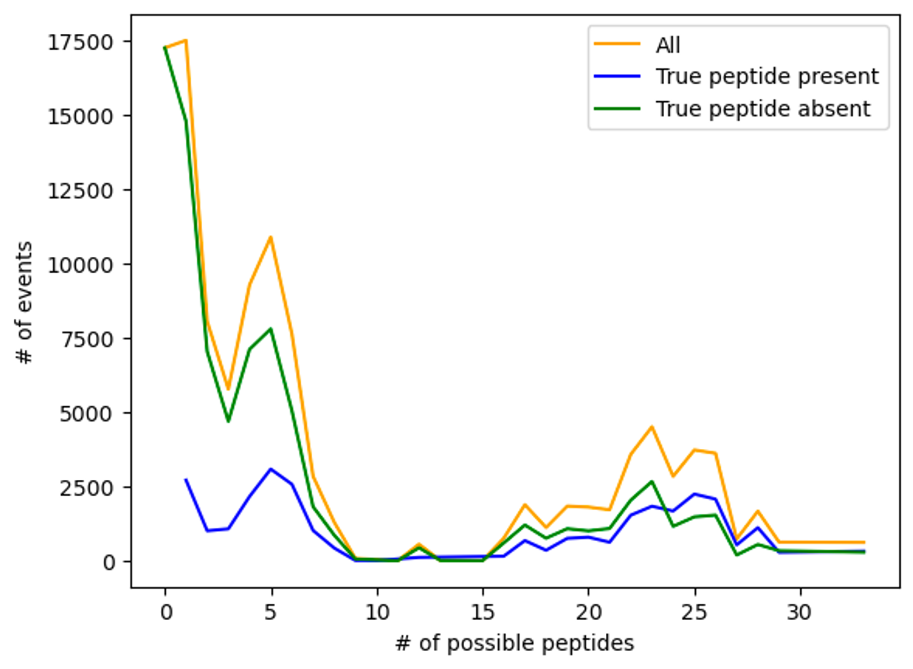
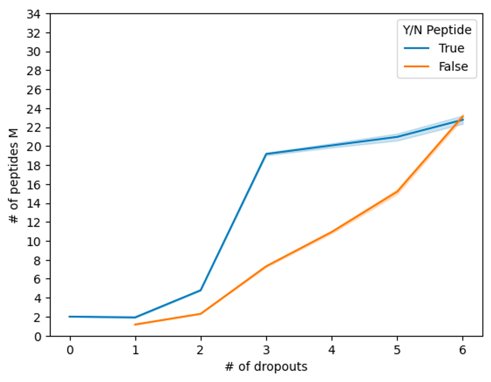
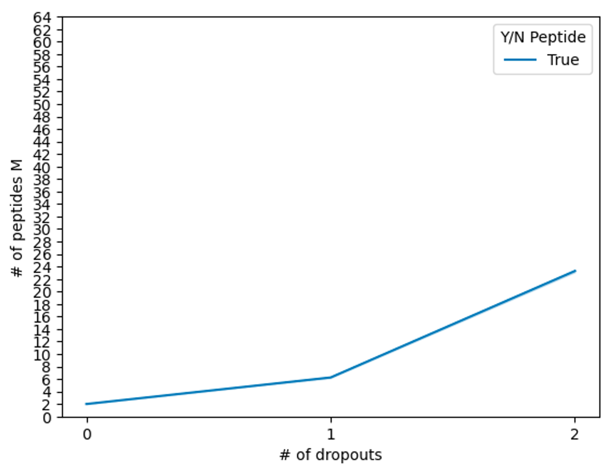
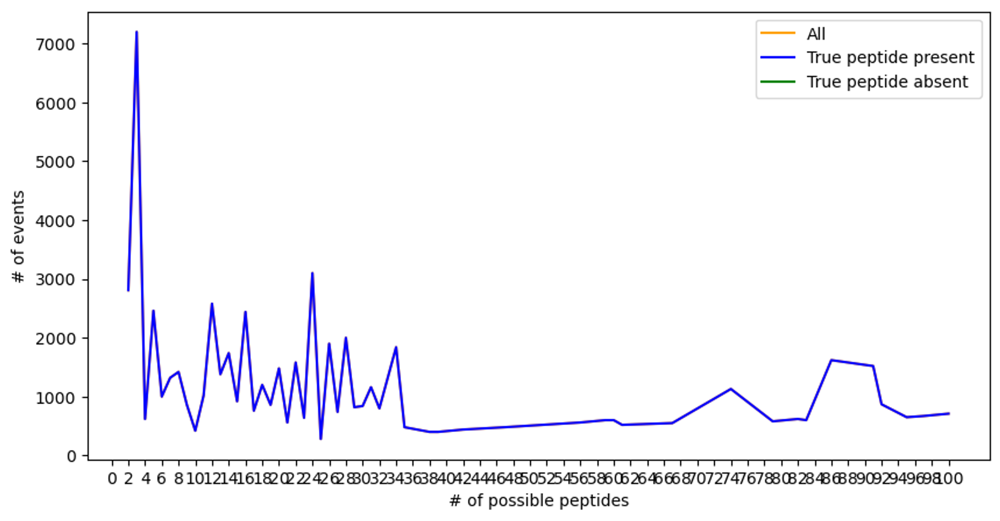
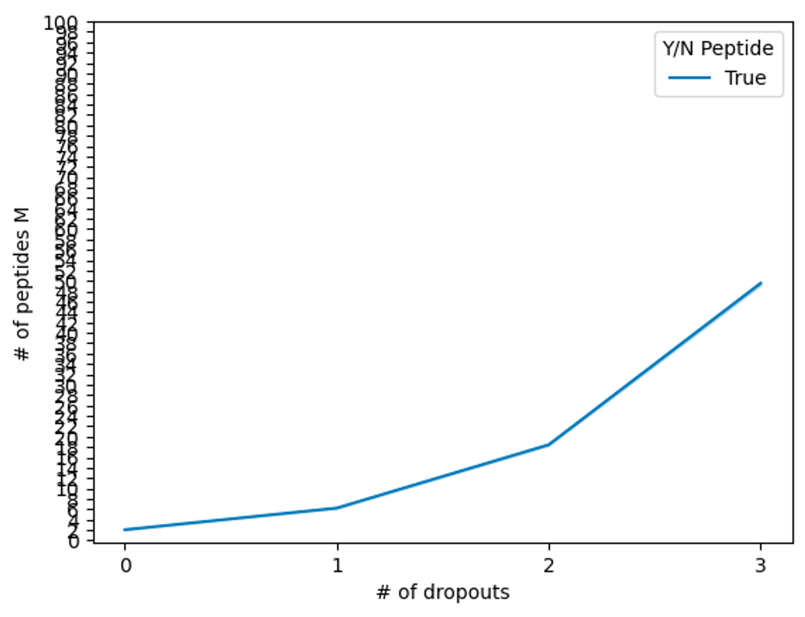
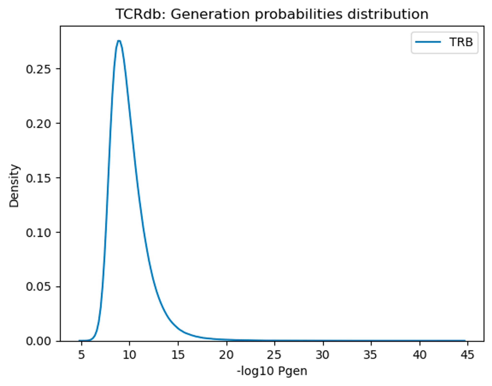

Peptide pooling
Outline
Algorithmic tasks:
-
drop-outs (especially useful for the PBMCs sequencing part)
-
improve address selection using Hannah’s idea — Set coverage problem
-
balance between number of pools, number of peptides in one pool, using user’s threshold
-
add to the code option to choose the number of max undistinguishable peptides (for more overlapping peptides)
-
add to the code check for how strongly peptides overlap
Drop-outs
Task description
- Possible mistakes:
- drop-outs, causing:
- impossibility of narrowing down peptide options to 2 peptides
- absence of right peptide in possible options
- additions, causing:
- impossibility of narrowing down peptide options to 2 peptides
- drop-outs AND additions
- impossibility of narrowing down peptide options to 2 peptides
- absence of right peptide in possible options
- drop-outs, causing:
- Impossibility of narrowing down peptide options to 2 peptides can be solved (or at least minimized):
- by redundancy of addresses
- by some general rule of address generation (i.e. sum of all addresses is even or something like that)
- Absence of right peptide in possible options can be solved:
- by determination when and how many pools were dropped, for example by creating a general rule for the number of activated pools
Tasks
- [x] find a metric for algorithm accuract in presence of dropouts (# of peptides M / # of dropouts looks nice, but maybe needs a little more rethinking); # of event / # of peptides M plot needs rethinking too
- [x] I tried a simple algorithm (# of pools ≤ ITERS +1 AND sum(pools)%2 == 0), but there is not enough addresses for this solution → I need to look at the peptides and calculate on paper how these two ideas work together
- [ ] Think about different version of address assignment: I need to ensure that epitopes lying on the intersection of two peptides have unique address —> I do not need to think about addresses for peptides but rather addresses (i.e. activated pools) for epitopes
Results
How drop-outs are handled now without any changes to the algorithm
 All possible dropouts starting from two activated pools are shown. One event = activation if pools with one epitope with 0 to ITERS-2 drop-outs
 How number of drop-outs impacts number of possible peptides
Altered algorithm
- '# of activated pools == iters +1
- sum(address) is even
To satisfy the first requirement, rearrangement of addresses was needed. Like this:
(0, 1, 2, 3)
(0, 1, 2, 4)
(0, 1, 2, 5)
(0, 1, 2, 6)
(0, 1, 2, 7)
(0, 1, 2, 8)
(0, 1, 2, 9)
(0, 1, 2, 10)
(0, 1, 2, 11)
(0, 1, 3, 4)
(0, 1, 3, 5)
(0, 1, 3, 6)
(0, 1, 3, 7)
(0, 1, 3, 8)
(0, 1, 3, 9)
(0, 1, 3, 10)
(0, 1, 3, 11)
(0, 1, 4, 5)
(0, 1, 4, 6)
(0, 1, 4, 7)
(0, 1, 4, 8)
...
(0, 1, 2, 3)
(0, 1, 2, 4)
(0, 1, 2, 5)
(0, 1, 2, 6)
(0, 1, 2, 7)
(0, 1, 2, 8)
(0, 1, 2, 9)
(0, 1, 2, 10)
(0, 1, 2, 11)
(0, 1, 3, 11)
(0, 1, 3, 10)
(0, 1, 3, 9)
(0, 1, 3, 8)
(0, 1, 3, 7)
(0, 1, 3, 6)
(0, 1, 3, 5)
(0, 1, 3, 4)
(0, 1, 4, 5)
(0, 1, 4, 6)
(0, 1, 4, 7)
(0, 1, 4, 8)
...
And then addresses with odd sum were filtered out. Unfortunately, it should be an iterative procedure (+ getting rid of the bad addresses), and because of that a lot of addresses were lost.
This scheme turned out to be more susceptible to collisions, because now similar addresses have similar neighbours:
- (0, 1, 2, 10) —
VYYPDKVFRSSVLHSTQ - (0, 1, 2, 11) —
KVFRSSVLHSTQDLFLP - (0, 1, 10, 11) —
SALEPLVDLPIGINITR - (0, 2, 10, 11) —
VYYPDKVFRSSVLHSTQ
In previous algorithms such cases were rare, because similar addresses (0, 1, 2, 10) and (0, 1, 10, 11) have very different neighbours (0, 1, 2, 11) and (0, 2, 3, 4). As a result, a lot of possible addresses are filtered out.
| N_POOLS | ITERS | Initial number of addresses | Organized addreses with even sum without collisions |
|---|---|---|---|
| 12 | 3 | 220 | 80 |
| 12 | 4 | 495 | 42 |
| 13 | 3 | 286 | 88 |
| 13 | 4 | 715 | 77 |
| 14 | 3 | 364 | 122 |
| 18 | 3 | 816 | 309 |
| 18 | 4 | 3060 | 214 |
| 18 | 5 | 8568 | 184 |
But this scheme solved the proble of the absence of the TRUE peptide in possible peptides.


However, number of possible peptides skyrocketed. That is because number of pools was very high (18).
Other problems:
- clever mechanism of pools balance will be needed to not disturb special address rearrangement when all two neighbour addresses has sum of set == ITERS +1
- too many pools, and because of that algorithm is clearly non-scalable
- still determination of TRUE peptide is problematic again because of too many pools
Only # of activated pools were restricted
Then I tried using only number of activated pools restriction, without any particular rule for the address selection (even sum), because even sum ruled out a lot of possible addresses (near a half).


Public TCRs
Outline
- I need to read a paper about TCRdb — why do they have beta chains there only?
- I need to download information about alpha-chains from projects myself (maybe I can use TCRdb workflow of database curation?)
- Pathological conditions need to be manually curated
- paper on TCR fingerprinting clustering
- paper about CDR3 length — Two types of human TCR differentially regulate reactivity to self and non-self antigens
- Why are TRA CDR3s in McPAS shorter than others?
- Clustering tool — ClusTCR (Usage)
Results
 New distribution of TCR p gen for data from TCRdb
Horizontal gene transfer
Outline
- [PalmDB](https://github.com/rcedgar/palmdb}
- [x] download data from the paper
- [ ] can we use their code for our purposes?